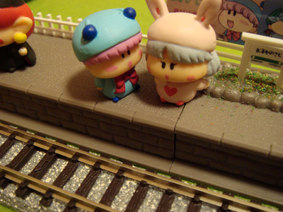
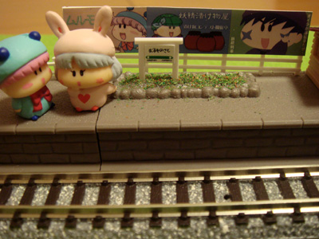
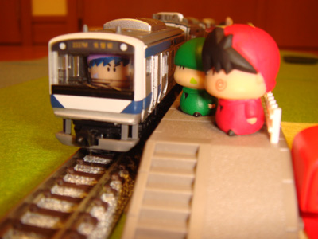
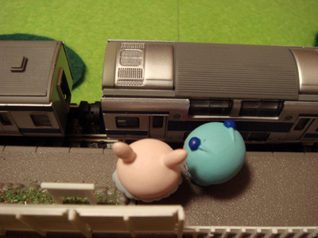
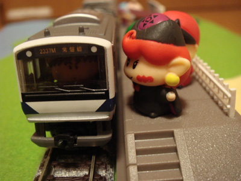
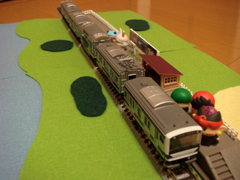
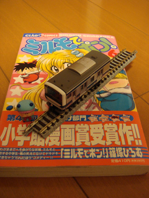

鉄道模型の定番として『Nゲージ』は有名ですが、線路の幅はそのままに車両を短くした『Bトレインショーティー』というシリーズもひそかなブームのようです。Bトレインショーティーを使ってミルモらしさを演出できないか？ 今回はそんなお題に挑戦してみました。
それでは写真とともに解説していきます。

ヤシチ「あの緊張癖のサスケが電車の運転手とは・・・。 |
今回の素材として、線路や駅はもちろんNゲージ用、妖精やポストは以前トミーから発売されていた『ちびミルコレクション』、ジオラマは裁縫練習用のフェルトを貼り合わせて用意しました。

パピィ「あたちグリーン車は初めてよ」 |

駅の看板も自前で用意しました。文字がぼやけてしまわないよう、プリンタの解像度を上げるのに苦労しました。

アクミ「あ～もうっ、いつになったら電車が来るんだよ！」

サスケ「お待たせ～だぜ～」 |
サスケをBトレインショーティーにはめ込んでみました。ちょっとだけ高さがオーバーするため、土台を少し削ってぎりぎり収まっています（写真はフラッシュ使用）。

パピィ「どうちたのよ、早く乗りなちゃいよ」 |
ムルモの隣に座ろうとするパピィ、パピィから離れて座ろうとするムルモ、どっちから先に乗るかでもめているようです。

アクミ「おいっ、こんなに遅れてどういうことだよ！」
|

全体はこんな感じです。ちなみに電車はJR常磐線のE531系、ちょっと妖精界には似合わない近代的な列車でしたね。今後もBトレインショーティーを使って、さらなるミルモ化に挑戦したいと思います。
<2008/5/15追記>
Bトレインショーティーの大きさがいまいち伝わらないので、ミルモの原作コミックスと大きさを比較してみました。ムルモのフィギュアの幅が約１センチであることからも、その精密さを感じていただければと思います。
|  | 運転手のサスケ（イメージ） |
(2008/5/14)